FULED
A wellness app for flatting uni students that makes a structured, social lifestyle feel normal, not overwhelming.

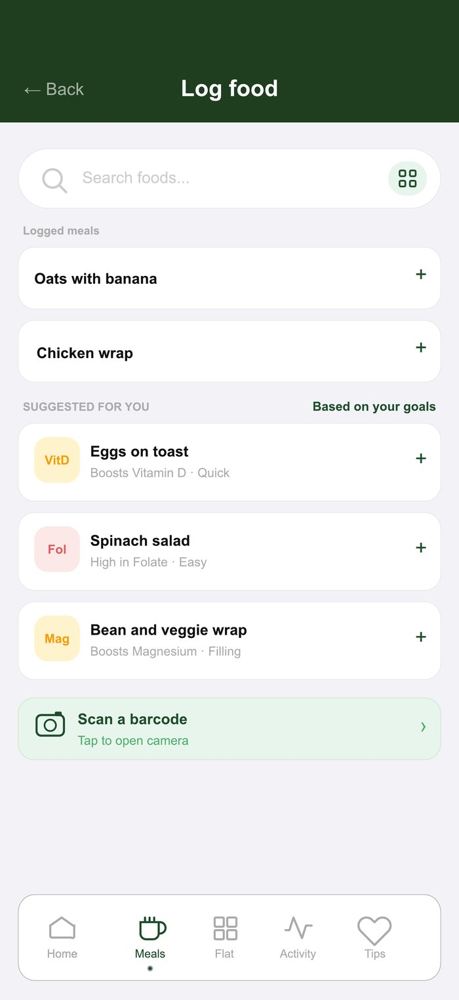
Overview
A wellness app for flatting 2nd/3rd-year uni students that makes a structured lifestyle feel normal, social and not overwhelming, covering meals, flat cooking, activity and recovery in one calm place.
The problem
Mainstream wellness tools are daunting and calorie-obsessive, and often give outdated advice, leaving students overwhelmed rather than supported.
Process
Research
We surveyed and interviewed University of Canterbury students about their health habits, the apps they already use, and what gets in the way. Findings were grouped through affinity mapping into three core themes and three personas: the Busy Student, the Flat Cook and the Active Student.
“I make sure I get my fibre, that’s all I really track. I get most of my nutrition knowledge from my flatmates.”
“I go through phases of calorie tracking but it never sticks. MyFitnessPal is effective but it feels like a diet thing.”
“What helps me stay active is the people around me. What gets in my way is procrastination and just not being bothered.”
“Cognitive and physical health go hand in hand; what I do for one benefits the other.”
Three themes from the research
Affinity mapping the survey and interview data surfaced three themes that every persona shared. These set the direction for the whole app.
From themes to design objectives
Each theme became a design objective, and each objective became a concrete set of features. Every screen in the prototype traces back to one of these three.
- A shared Flat Meals space where flatmates plan meals together and store recipes
- Easy, affordable meal suggestions scaled to the number of people in the flat
- Social features so healthy habits feel part of your lifestyle, not a chore
- An easy-to-read dashboard linking physical and cognitive health: sleep, focus and activity
- Goal-setting tools that account for busy or disrupted weeks
- Resources for mental and physical wellbeing in one place
- Class schedules surfaced alongside food suggestions that match what the body needs afterwards
- A Recovery feature suggesting food and supplements for hard days
- Recommendations that adjust for study mode, training or recovery
Onboarding flow
Every screen below is a real frame from the working Figma prototype, from first launch to a personalised dashboard.
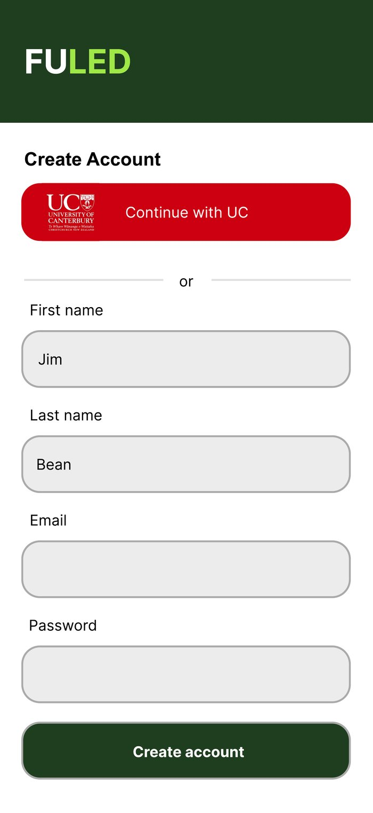
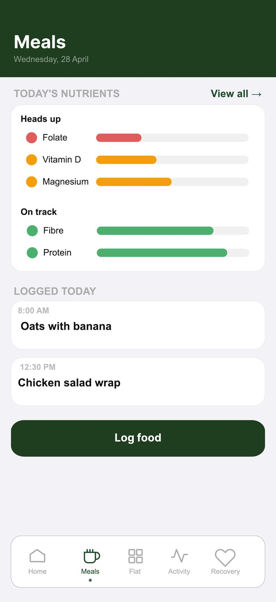
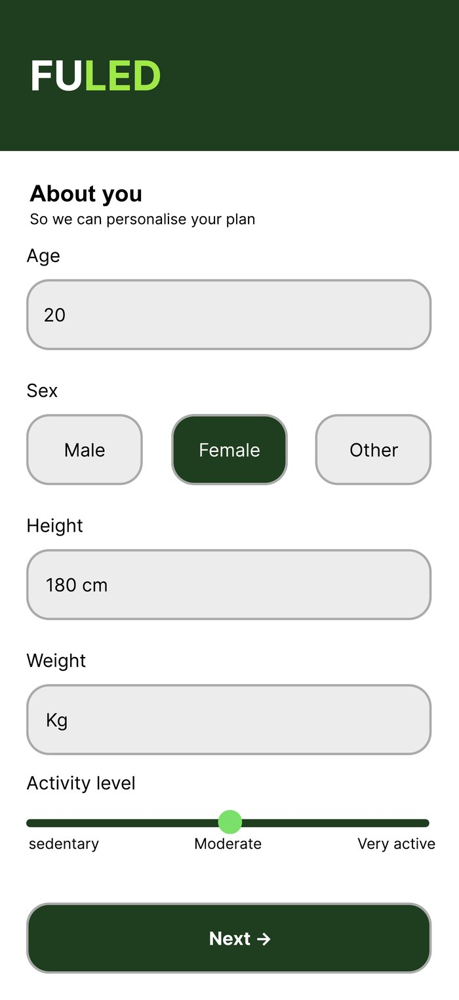
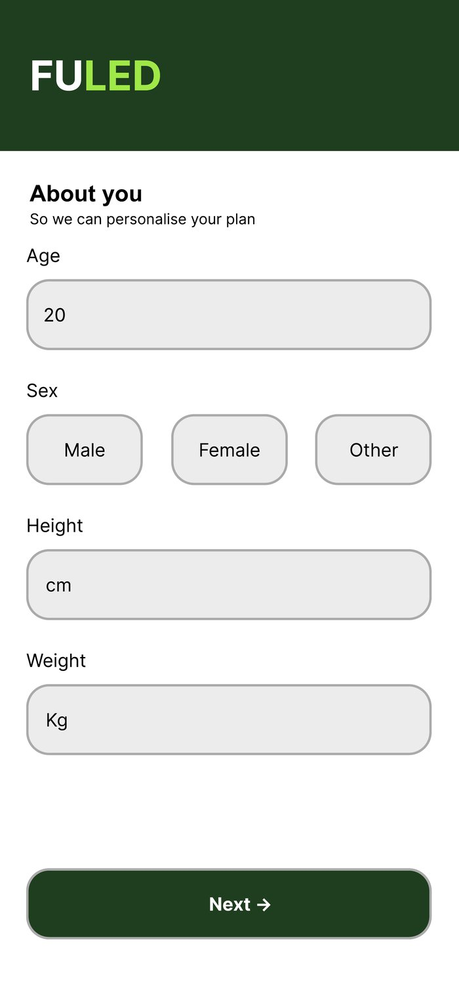
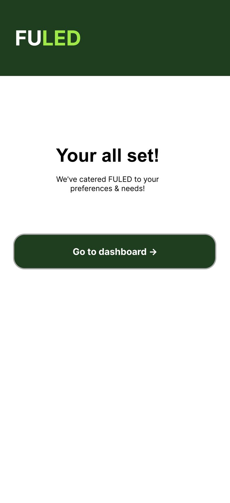
Key user journeys
Four end-to-end flows were built and tested in the prototype, each mapped to a core objective.
- Sign up and set a personalised profile
- Open the Meals tab
- View nutrients and progress
- Tap one to learn why it matters
- Quick-log a recent meal
- Search, or scan a barcode
- Join your flat with a code
- See what everyone is cooking
- Add a meal to your night
- Pull in a flatmate’s recipe
- Check what to prep
- Confirm it to the flat
- Log a physical session
- Log a study session
- Get sleep, water and food recommendations scaled to both
- Open the Tips home
- Pick a topic: nutrition, sleep, drinking, study or exercise
- Expand only the sections you need
Key decisions
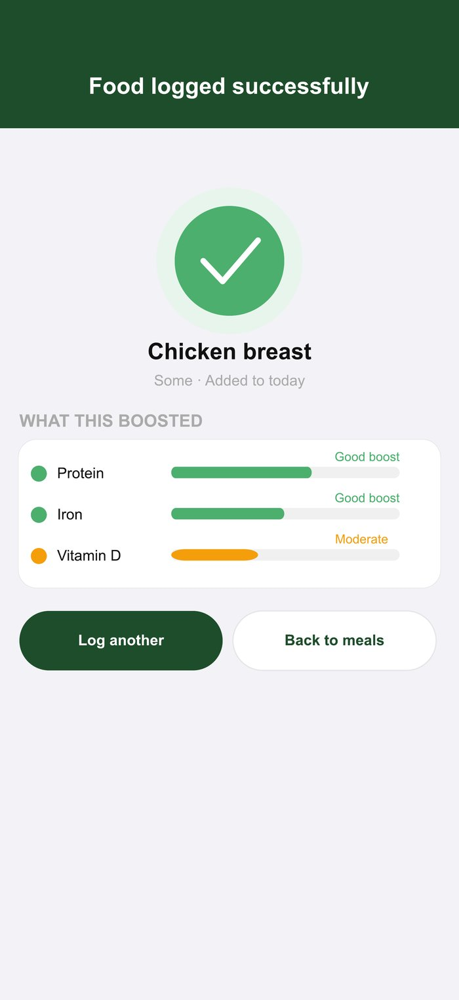
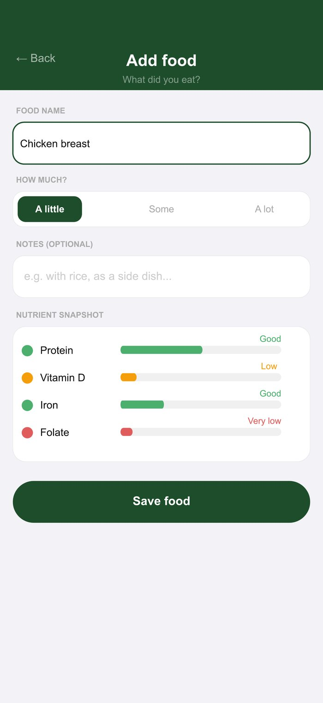
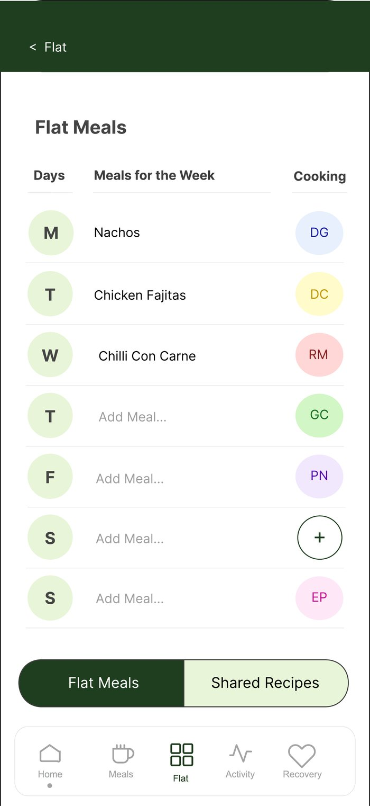
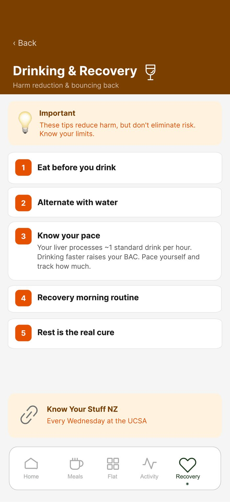
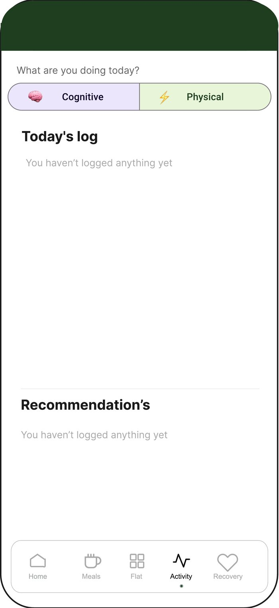
Usability testing and iteration
We ran the prototype with UC students through task walkthroughs, an expert review and usability testing, then took every finding back into the design.
- Clear layout, simple and easy to move through
- Logging a meal by search was quick and obvious
- Nutrition information read as clear and engaging rather than overwhelming
- Engagement features, like the flat leaderboard, landed well
- Testers said the features made sense to their uni life and they would actually use it
- Some users were unsure how to navigate back
- The colour palette drifted between screens
- The flat meals section needed to be clearer
- Questions came up about how food logging actually works
- Nutrient detail pages felt information-heavy
- Added headings throughout for orientation and clarity
- Brought the colour palette back into line across every screen
- Rebuilt the flat meals page with a cleaner, easier-to-follow layout
- Condensed the nutrient detail pages into manageable sections
- Sharpened the app’s scope around flat meals and nutrition
Final screens
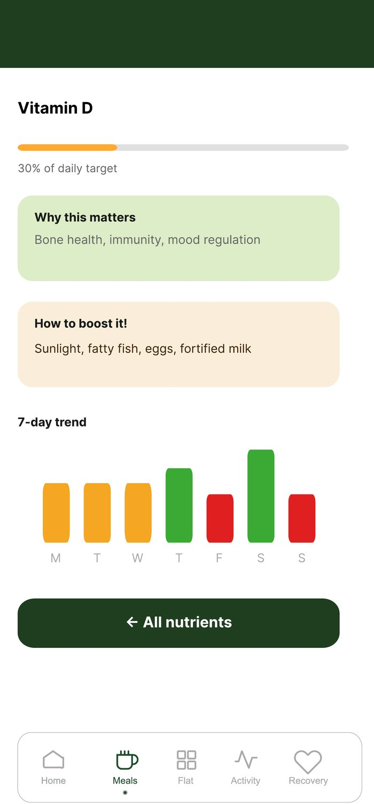
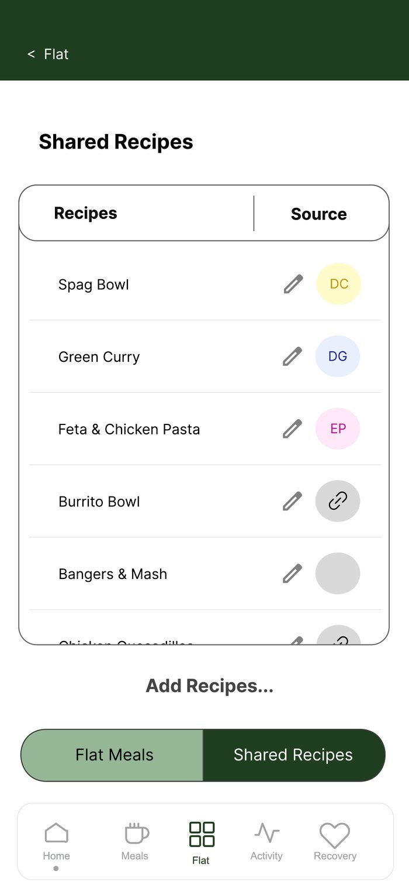
FULED's greatest strength is its conceptual clarity: every feature traces back to student research, built around one coherent idea: wellness works better when it's social, simple and guilt-free. Removing calorie tracking entirely sets it apart from every existing app in the space.